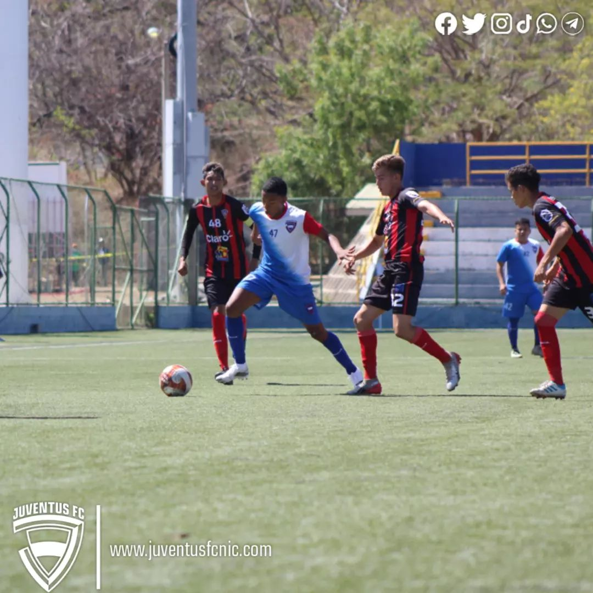
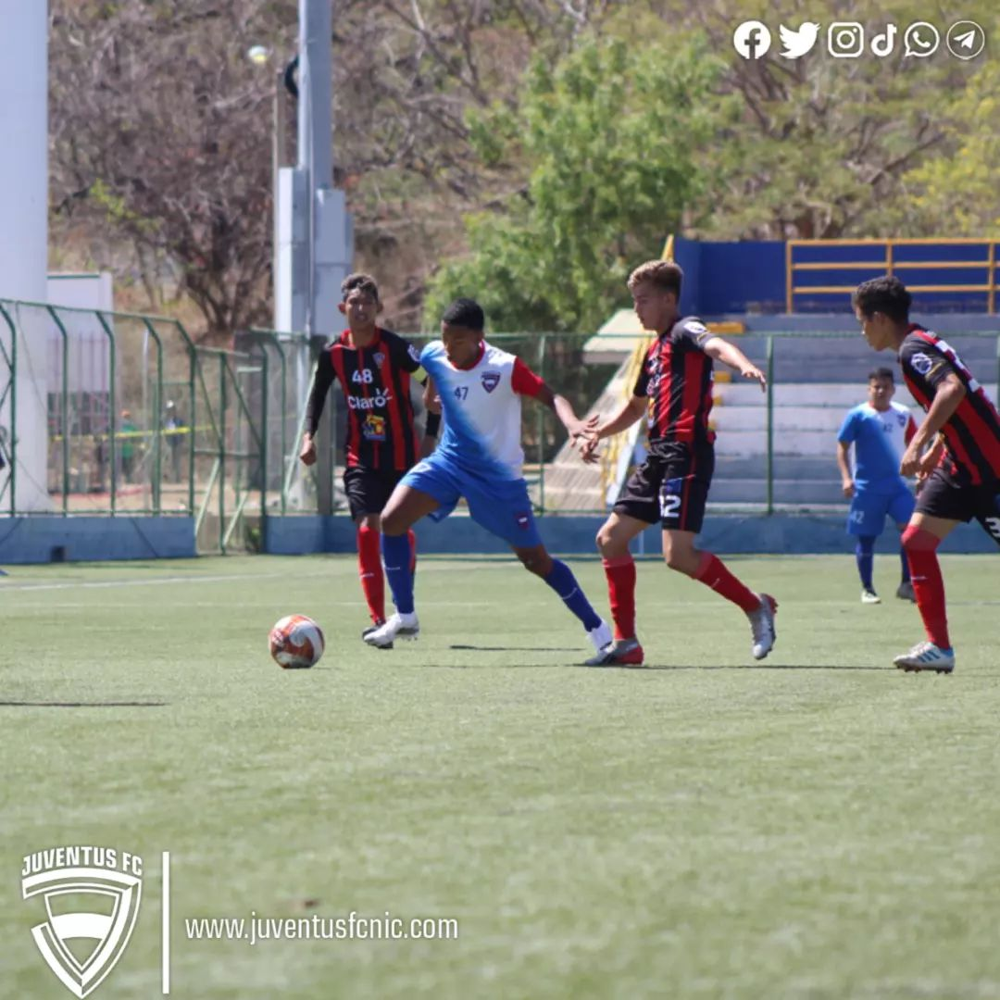
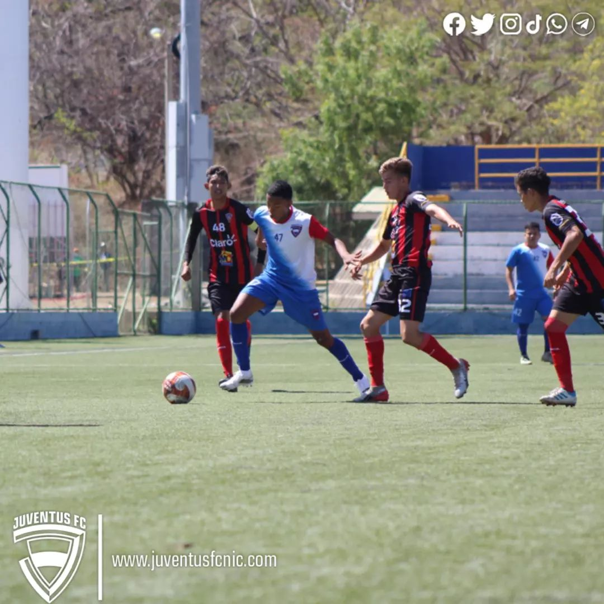

Galería de Fotos
 

Kurt Thomas es un talentoso futbolista nicaragüense de 20 años. Nació el 21 de Agosto de 2003 en Nicaragua. Desde temprana edad, mostró un gran interés por el fútbol y comenzó a jugar en las ligas locales. A lo largo de los años, ha demostrado su habilidad en el campo y su pasión por el deporte.
Kurt ha representado a su país en varias competiciones internacionales y ha sido reconocido como una promesa del fútbol nicaragüense. Su dedicación y trabajo duro lo han llevado a destacar en su equipo y a ser admirado por sus seguidores.

| Temporada | Equipo | Partidos Jugados | Goles | Asistencias | Tarjetas Amarillas | Tarjetas Rojas |
|---|---|---|---|---|---|---|
| 2021-2022 | Juventus FC | 25 | 12 | 8 | 3 | 0 |
| 2023 | Real Esteli | 15 | 9 | 6 | 2 | 0 |
| 2023 | CD Walter Ferreti | 10 | 6 | 4 | 1 | 0 |
| Club | Temporada |
|---|---|
| Juventus FC | 2021-2022 |
| Real Esteli | 2023 |
| CD Walter Ferreti | 2023 |